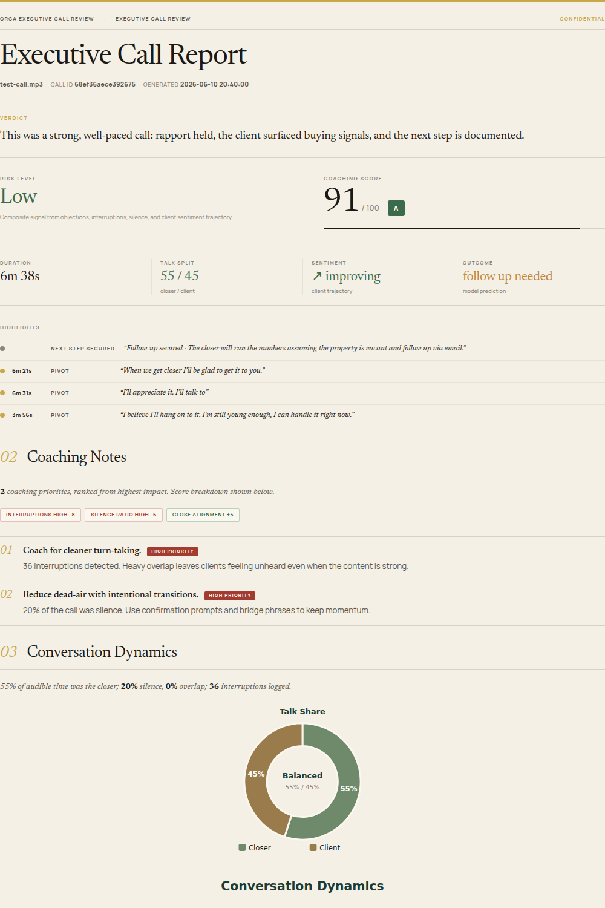
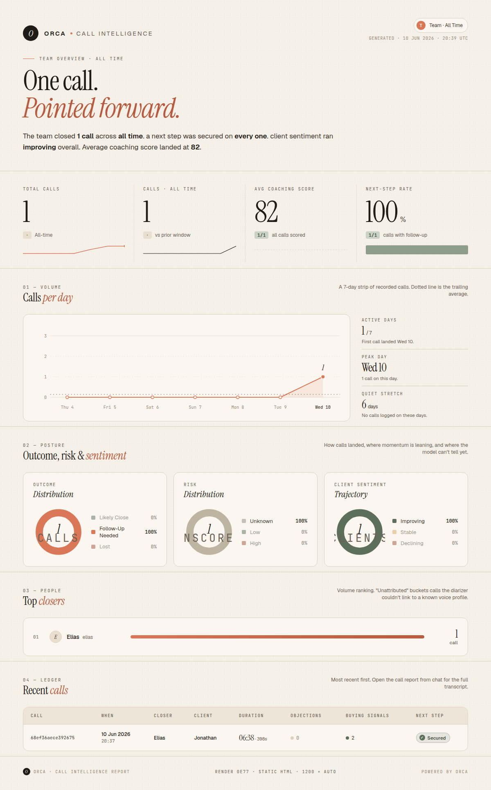

orca-call-intelligence
Sales calls in. Emotion-aware intelligence out. Nothing leaves the machine.
ORCA is a self-hosted pipeline that turns a raw call recording into a diarized transcript, nine-class speech emotion, prosody analysis, extracted KPIs, a coached scorecard, and a branded PDF report. A pgvector index makes every call searchable, and an n8n agent lets the team chat with the whole archive.
- 5 GPU-accelerated FastAPI services, launched with one
docker compose up - ~95% retrieval quality at 20% of the storage, via Matryoshka-truncated embeddings
- PII redacted with Presidio before anything reaches the database
- Whisper
- pyannote
- emotion2vec
- FastAPI
- pgvector
- Ollama
- n8n
- Docker
- CUDA

